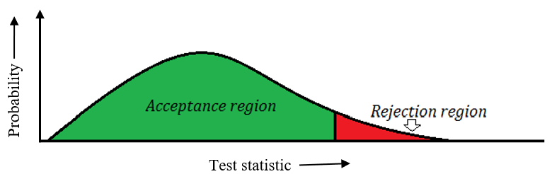
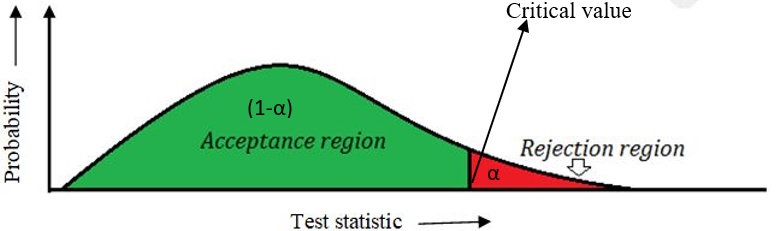
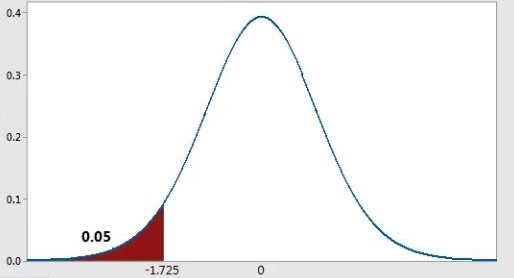
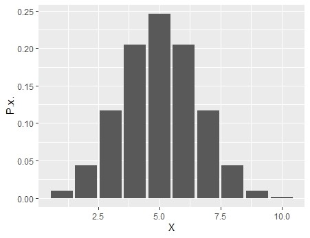

12 Hypothesis Testing
12.1 A hypothesis
Statistical analysis is an important part of scientific research. It helps researchers make sense of the data they collect and draw conclusions. But before any analysis can begin, a researcher needs to have a hypothesis.
A hypothesis is a possible explanation or prediction about something the researcher wants to study. It is based on previous knowledge, observations, or ideas. A hypothesis gives direction to the research—it tells us what to look for in the data.
Note
A statistical hypothesis is a specific, testable statement about a population parameter. It expresses an assumption or claim that can be tested using statistical methods based on sample data. Statistical hypotheses are generally formulated in pairs: the null hypothesis (denoted as \(H_0\)), which represents the default or no-effect assumption, and the alternative hypothesis (denoted as \(H_1\) or \(H_a\)), which represents the research claim or expected effect.
Null hypothesis
The null hypothesis (\(H_0\)) is a statement that there is no effect, no difference, or no relationship between variables. It represents the default or status quo assumption. In hypothesis testing, we assume the null hypothesis is true unless we have strong evidence against it.
Alternative hypothesis
Alternative hypothesis (\(H_1\) or \(H_a\)). The alternative hypothesis is a statement that there is an effect, a difference, or a relationship. This is what the researcher is trying to prove through the data.
Example 12.1:A plant biologist wants to test if different fertilizers affect plant height. He can frame the hypotheses as below.
\(H_0\): There is no difference in plant height among different fertilizers.
\(H_1\): There is a difference in plant height among different fertilizers.
Example 12.2: A pharmaceutical company wants to know if a new drug is more effective than the standard treatment.
\(H_0\): The new drug is equally effective as the standard treatment.
\(H_1\): The new drug is more effective than the standard treatment.
The Falsification Principle
The falsification principle was proposed by Karl Popper, is a way of demarcating science from non-science. It suggests that for a theory to be considered scientific it must be able to be tested and proven false. For example, the hypothesis that “all swans are white,” can be falsified by observing a black swan. According to Popper, science should attempt to disprove a theory, rather than attempt to continually support theoretical hypotheses.
12.2 Null hypothesis
So considering the Popperian Principle of Falsification, we need to translate the working hypothesis into a framework consisting of two hypotheses. These hypotheses are termed as Null hypothesis and Alternative hypothesis. It will be clear with the example below.
Null hypothesis will be the hypothesis that is either rejected or accepted based on the experiment.
In the above example biologist may state a null hypothesis that the average height (or mean height) for plants with the different fertilizers will all be the same.
The alternative hypothesis (which the biologist hopes to show) that the average height (or mean height) for plants with the different fertilizers not all equal, i.e. some of the fertilizer treatments have produced plants with different mean heights.
Now after the experiment biologist may either reject the null hypothesis or accept it. This in turn will result in acceptance or rejection of alternative hypothesis accordingly.
So finally we will concentrate on either rejecting or accepting a null hypothesis.
Definitions
Null hypothesis: It is a statement of ‘no effect’ or ‘no difference’.” It is often symbolized as H0. It is the hypothesis that the researcher is trying to disprove.
Alternative hypothesis: It is simply the inverse, or opposite, of the null hypothesis. It is often symbolized as H1.
Example
Not so long ago, people believed that the world was flat. So the research problem was whether the Earth is flat?
Null hypothesis, H0: The Earth is flat.
Alternate hypothesis, H1: The world is round.
Several scientists, including Copernicus, set out to disprove the null hypothesis. This eventually led to the rejection of the null and the acceptance of the alternate.
12.2.1 Stating hypothesis
Problem 1: A researcher thinks that when certain chemical is applied twice a week after flowering on a fruit tree. Average fruit weight from the plant is 8 kg.
Let us see how the null hypothesis of above problem is formulated
Step 1: Figure out the hypothesis from the problem. The hypothesis is usually hidden in a word problem, and is sometimes a statement of what you expect to happen in the experiment.
The hypothesis in the above question is “researcher expects the average fruit weight per plant is 8 kg.”
If μ (pronounced as ‘mu’) denotes average yield we say, then null hypothesis can be stated as
H0: μ = 8
Step 2: For alternative hypothesis. State, what will happen if the hypothesis doesn’t come true? If the average fruit weight is not equal to 8 kg, then there is only one assumed possibility that the weight is less than 8 kg (assuming that there is no possibility that chemical will increase yield). So alternative hypothesis can be stated as
H1: μ < 8
But what if the researcher doesn’t have any idea what will happen?
Problem 2: A researcher is studying the effect of a chemical on plant yield. This chemical is used as a pesticide. He wants to prove that this chemical has no effect on yield. But this chemical can be dangerous or may boost the yield.
Step 1: Figure out the hypothesis from the problem.
The hypothesis in the above question is “researcher expects the change in average yield before and after application of chemical is 0”
If μ denotes ‘change’ in average yield before and after chemical application
Null hypothesis can be stated as
H0: μ = 0
Step 2: For alternative hypothesis. Researcher has no idea whether the chemical will increase or decrease the yield. He just wants to prove the chemical has no effect on yield. So the alternative hypothesis will be
H1: μ \(\mathbf{\neq}\) 0
12.3 Hypothesis testing problem
In hypothesis testing a decision between two alternatives, one of which is called the null hypothesis and the other the alternative hypothesis, must be made. To make the decision, an experiment is performed. In hypothesis testing acceptance or rejection of the null hypothesis can be based on a decision rule.
Example: You have a coin with you. You need to check whether the coin is biased or unbiased. Unbiased means here is a 50:50 chance of landing a head or tail on tossing it.
First you have to formulate the null hypothesis and alternative hypothesis.
If the coin is unbiased then the probability of obtaining head will be 0.5; i.e. \(p\) = 0.5
Therefore the null hypothesis and alternative hypothesis will be
H0: \(p\) = 0.5
H1: \(p\) \(\mathbf{\neq}\) 0.5
You have designed an experiment such that, you will toss the coin 10 times and you will note down the outcome. And after conducting the experiment you got the outcome as given below
| Experiment No: | 1 | 2 | 3 | 4 | 5 | 6 | 7 | 8 | 9 | 10 |
|---|---|---|---|---|---|---|---|---|---|---|
| Result | H | H | H | H | T | H | T | H | H | H |
In hypothesis testing acceptance or rejection of the null hypothesis can be based on a decision rule. You will calculate a test statistic from the sample (outcome from the experiment). Decision rule is based on this statistic.
Test statistic: Test statistic is any quantity computed from values in a sample or it is a function of sample values based on which decision is made up on the null hypothesis.
In this example of a decision rule, you might decide to reject the null hypothesis and accept the alternative hypothesis, if 8 or more heads occur in 10 tosses of the coin. That is, you will reject the null hypothesis if \(p\) \(\geq \frac{8}{10} = 0.8\).
So in the above experiment test
Number of heads = 8
Number of tosses = 10
Test statistic calculated, \(p\) = 8/10 = 0.8
So based on the decision rule you will reject the null hypothesis, and assume that coin is biased.
Now here for the example sake we have formulated the decision rule. We cannot frame a decision rule simply. A lot of factors need to be considered, like how confident are you to reject the null hypothesis based on sample observations you have taken (here number of tosses is 10). We will discuss that in coming sections.
12.4 Errors in Hypothesis testing
With respect to hypothesis testing the two errors that can occur are:
The null hypothesis is actually true but the decision based on the testing process concluded that the null hypothesis is false and should be rejected
The null hypothesis is actually false but the testing process concludes that it is true and should be accepted.
These two errors are called Type I and Type II errors.
Type I error: Reject null hypothesis, when it is actually true
Type II error: Accept null hypothesis, when it is actually false
| In fact H0 is true | In fact H0 is false | |
|---|---|---|
| Test decides H0 is true | Correct Decision | Type II error |
| Test decides H0 is false | Type I error | Correct Decision |
12.5 Level of significance and power of test
Level of significance (α)
The significance level, also denoted as α (alpha), is the probability of rejecting the null hypothesis when it is true. i.e. Level of significance is the probability of Type I error.
Power of test (1- β)
The probability of Type II error is denoted as β. ‘1-β’ is termed as power of test. Power of test is the probability of rejecting the null hypothesis when it is false. α and β plays a role in deciding the decision rule for hypothesis testing.
Seriousness of type I and type II errors
Which of the both above error is more serious? To understand the interrelationship between Type I and Type II error, and to determine which error has more severe consequences for your situation, consider the following example.
A medical researcher wants to compare the effectiveness of two medications.
Null hypothesis (H0): μ1= μ2
The two medications are equally effective.
Alternative hypothesis (H1): μ1≠ μ2
The two medications are not equally effective.
A Type I error occurs if the researcher rejects the null hypothesis and concludes that the two medications are different when, in fact, they are not. This will not have much serious consequence.
Type II error occurs when the researcher concludes that the medications are the same when, in fact, they are different. This error is potentially life-threatening, if the less-effective medication is sold to the public instead of the more effective one.
Now the other example, where you are diagnosing cancer.
Null hypothesis (H0): Patient has no cancer
Alternative hypothesis (H1): Patient has cancer
A Type I error occurs if the researcher rejects the null hypothesis and concludes that patient has cancer, actually when he is healthy.
Type II error occurs when the researcher concludes that the patient has no cancer when he has cancer.
Here both errors can have serious consequences
Depending on the situation seriousness of Type I and Type II error may change. In some cases Type I is more severe, while Type II may be severe in other cases.
Now let us look more critically in to the situation. If we try to reduce Type I error Type II error will increase. If we try to reduce Type II error Type I will increase. So to make a decision, we must identify which error is more serious. We commit a Type 1 error, if we reject the null hypothesis when it is true. This is a false positive, like a fire alarm that rings when there’s no fire. A Type II error happens if we fail to reject the null when it is not true. This is a false negative - like an alarm that fails to sound when there is a fire.
Let us return to the question of which error, Type I or Type II, is worse.
Consider a person accused of a crime waiting for judgement to be hanged.
H0: He is innocent
H1: He should be hanged
What if the judge makes a Type I error?
The innocent will be hanged!!!!
What if the judge makes a Type II error?
The criminal will be set free!!!
Of course you wouldn’t want to let a guilty person off the hook, but most people would say that sentencing an innocent person to such punishment is a worse consequence. Hence, many textbooks and instructors will say that the Type I (false positive) is worse than a Type II (false negative) error. By assuming Type I is worse at least you are not worsening the situation.
So in practice, we fix Type I error by selecting suitable probability α before experiment. And reduce Type II error by taking adequate sample size. Usually we fix α =0.05 or 0.01
Note: if in any exam such a question pops up, which error is serious? Answer it as Type I. But honest answer is- ‘it depends’
12.6 Region of acceptance and rejection
The test statistic you calculate from the sample will have a probability distribution. For example consider the coin tossing experiment we discussed earlier. The test statistic calculated by person A will be different from person B, as both may get different outcomes on performing same experiment. So a particular value of test statistic will have a probability. The probability distribution of test statistic is termed as sampling distribution of test statistic.
You will reject the null hypothesis, if the test statistic falls in particular area of the sampling distribution, this area in the sampling distribution of test statistic is called as region of rejection. The region in the sampling distribution of the test statistic is called region of acceptance, if the test statistic falls in this area we will accept the null hypothesis.
Size of the region of rejection is equal to level of significance = α
Size of the region of acceptance is equal to = 1- α
The region of rejection is also known as critical region. The value of test statistic above which we reject the null hypothesis is called critical value.

12.7 Two tailed and single tailed test
A statistical test is based on two competing hypotheses: the null hypothesis H0 and the alternative hypothesis H1. The type of alternative hypothesis H1 defines if a test is one-tailed or two-tailed. It is based on the alternative hypothesis type of the test is determined.
One-tailed tests
Consider the problem 1 in section @ref(state), there an alternative hypothesis is stated as
H1: μ <8
For this alternative hypothesis we reject the null hypothesis if the test statistics falls towards the left side of the sampling distribution, such a test is left tailed test.
If H1: μ > 8
For this alternative hypothesis we reject the null hypothesis if the test statistics falls towards the right side of the sampling distribution, such a test is right tailed test.
Left tailed test: if critical region is towards the left side of the sampling distribution of test statistic

Right tailed test: if critical region is towards the right side of the sampling distribution of test statistic

Two-tailed tests
Consider problem 2 of section @ref(state), here alternative hypothesis
H1: μ \(\mathbf{\neq}\) 0
Consider another alternative hypothesis
H1: μ \(\mathbf{\neq}\) 8
In all these cases critical region lies in both sides. Size of each side is α/2. Together will have a total size of α

12.8 Decision rule
After calculation of test statistic from the experiment, how will you make decision on null hypothesis?
Decision rule is largely determined by the level of significance α. A good test is one with low probability of committing a Type I error (i.e., small α) and high power (1-β, high power).
Power is determined by the sample size of the experiment. Based on α we select the critical value of the test statistic, if the calculated value falls above the critical value we reject the null hypothesis (for right tailed test). If the calculated value falls below the critical value we reject the null hypothesis (for left tailed test). If the calculated value falls above or below the critical value on both sides, we reject the null hypothesis (for two tailed test)
12.9 An example
Consider the example of testing whether a coin is biased or not in section @ref(hypo)
Here you are going to identify whether coin is biased or not based on just 10 tossing. (here 10 is your sample size).
Let the null hypothesis be
H0: \(p\) = 0.5
H1: \(p\) \(\neq\) 0.5
Let \(X\) be the number of heads, let us see the probability under null hypothesis for the \(X\) to take the value 1 to 10.
We know by binomial theorem:
\(p(X=x)\) = \(n\)\(c\)\(x\) \(p\)\(x\) \(q\)\(n-x\) = \(\frac{n!}{\left( n - x \right)!x!\ }\) \(p\)\(x\) \(q\)\(n-x\)
So in our experiment n=10, If null hypothesis is true then \(p\) = 0.5. So probability distribution of \(X\) is, when null hypothesis is true
| \(X\) | \(p(x)\) |
|---|---|
| 1 | 0.010 |
| 2 | 0.044 |
| 3 | 0.117 |
| 4 | 0.205 |
| 5 | 0.246 |
| 6 | 0.205 |
| 7 | 0.117 |
| 8 | 0.044 |
| 9 | 0.010 |
| 10 | 0.001 |
Above distribution of \(X\) can be plotted as below,

α is the level of significance. For this experiment we have selected α = 0.05. If it is a two tailed test critical value will be that value of \(X\), above and below there is an area of α/2 = 0.025. So using the probability distribution table above we can see that some area beyond \(X\) = 8 and below \(X\) = 2 approximately has an area of 0.025. So the critical values are \(X\) = 8 and \(X\) = 2. It means if the number of heads is above 8 or below 2 we will reject the null hypothesis at a level of significance of α =0.05.

Commonly used test statistics are \(t\), \(F\), \(Z\) and χ2 (pronounced as chi-square). Critical values of these test statistics are already available as tables.
12.10 Confidence Interval
If we are rejecting a null hypothesis at a level of significance α. Meaning is that you can attach a 100(1-α)% confidence to the conclusion. That is if you are rejecting a null hypothesis at a level of significance α=0.05, you are 100(1-0.05)% i.e. 95% confident about your result. If α=0.01 then you are 100(1-0.01)% i.e. 99% confident about your result. This can also be interpreted as, if you can attach a 95% confidence means, if this experiment is repeated infinite number of times, there is a 95% chance that you will get the same conclusion.
12.11 Steps in hypothesis testing
Now as a conclusion following are the 7 steps in hypothesis testing
Step 1: State the Null Hypothesis
Step 2: State the Alternative Hypothesis
Step 3: Set level of significance (α)
Step 4: Collect Data (from experiment or other scientific methods)
Step 5: Calculate a test statistic
Step 6: Identify the critical region of the test statistic for the specified level of significance (α)
Step 7: Compare test statistic with the critical value of the test statistic.
Step 8: If the calculated value of test statistic is greater than critical value of test statistic reject the null hypothesis with 100(1 – α )% confidence. Otherwise we state that we don’t have enough evidence to reject the null hypothesis.
Don’t panic, these things take a little time to digest. I have gone too much on discussing the concept in detail. In exam point of view try to answer the following
What is a hypothesis?
Define null and alternative hypothesis
Define test statistic
Two errors in hypothesis testing, definition.
Define one-tailed and two-tailed test
Define Critical region and Critical value
Define Power of test, Level of significance
Write down the steps in hypothesis testing